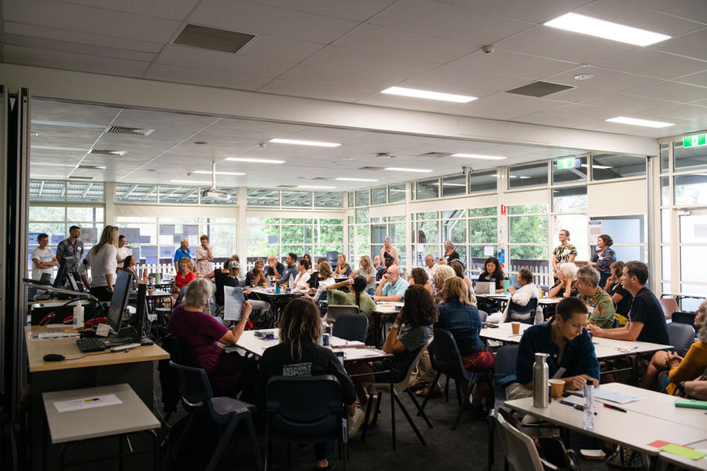
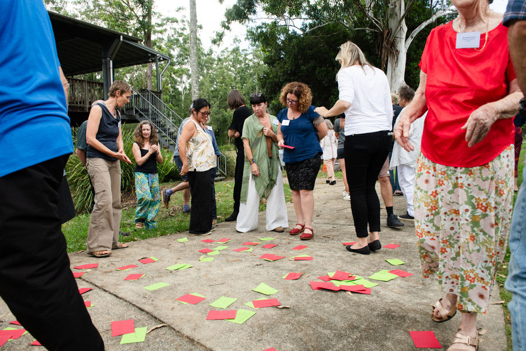

A growing movement of grassroots community groups building disaster resilience across the Northern Rivers

The Alliance in action
The group made up of groups
Since early 2024, more than 60 groups and organisations across the Northern Rivers have joined together to form the Resilience Alliance, a community-led network focused on collective care, preparedness and regional strength.
- Tweed
- Byron
- Ballina
- Lismore
- Kyogle
- Clarence
- Richmond


Focus and impact
- 60+
- grassroots groups and organisations
- 7
- local government areas
- 3
- projects under way
- $800,000
- HELP Fund grants program, over two years
Grow the Alliance
Welcoming more place-based groups so no group works alone.
Training and resource sharing
Practical tools, templates and learning passed group to group.
Peer support and self care
Looking after the people who look after their communities.
Funding and collective projects
Participatory grants and shared projects, decided locally.
Advocacy
A stronger collective voice in funding, policy and planning.
Thanks to our partners

Upcoming
27 Nov: Alliance Gathering, Phase 1
Gatherings
Projects
Three projects, funded by partners across government and philanthropy.
See partners
The R.A.C.K
The resource hub for Alliance groups.
Explore the R.A.C.K
Get involved
Local experience. Shared learning. Wider impact.
Find a group near youJoin the WhatsApp groupEmail the Network Lead

Local experience. Shared learning. Wider impact.
Since early 2024, more than 60 groups and organisations across the Northern Rivers have joined together to form the Resilience Alliance, a community-led network focused on collective care, preparedness and regional strength.
Vision
Connected, collaborative Northern Rivers communities that are empowered to care for themselves and each other before, during and after disasters.
Purpose
To develop a self-sustaining, trusted Alliance of place-based, community-led resilience groups and organisations. The Alliance shares knowledge and resources, provides mutual support and wellbeing, takes collective action and advocates for identified community needs.

Our journey
- 2022
After the floods and landslides, groups across the Northern Rivers organised locally and connections began to grow. Research found that grassroots groups wanted peer-to-peer support.
- 2024
The Resilience Alliance took shape, with the University Centre for Rural Health (UCRH) as embedded researchers documenting progress along the way.
- 2025
UCRH completed the first Resilience Alliance Health Check and shared findings with groups in the network.
- 2026
Connected and Prepared brings a Monitoring, Evaluation and Learning Framework and Implementation Plan.
- 2027 to 2028
Research and MEAL continue alongside the Alliance as it supports and resources groups in the network.
How we learn
Monitoring, Evaluation, Accountability and Learning.
- Connect
- Listen
- Reflect
- Improve
- Share
- Strengthen


“It's cutting edge. I don't really know whether this sort of thing has been tried before, certainly for community disaster response groups.”Alliance participant
Our structure
Steering committee, UCRH embedded researchers and the Network Lead, Kathie Heyman. Names to be supplied.
Common questions
How is the Alliance different from Community Resilience Networks?
Community Resilience Networks are hosted by councils in each local government area. The Alliance is a region-wide network that sits outside formal structures, a flexible space for independent grassroots groups to share practical solutions and build capacity.
How is the Alliance different from Plan C?
Plan C trains people directly and is one of our valued member organisations. The Alliance is a network of networks: it connects groups, helps them share what they know and gives them a stronger collective voice.

Our partners
The funders, delivery partners and researchers behind community-led resilience.
Placeholder partners. These logos are borrowed from another site to show the layout. They are not NRCRA partners. Real partners to be shown here: Disaster Ready Fund, FRRR, NRMA Insurance HELP Fund, NSW Government, Northern Rivers Community Foundation, Resilient Lismore, Plan C, University Centre for Rural Health, Monash University.
Funders
Whose funding makes this work possible.
Delivery partners
Who we build and deliver programs with.
Research partners
Who listens, reflects and tracks change alongside us.
Projects they support
Connected and Prepared
Governance, capacity building and shared digital tools.
Resourcing Community Resilience
Participatory grantmaking, decided by locals.
Learning Together (MEAL)
Monitoring, Evaluation and Learning with embedded researchers.

Groups across the Northern Rivers
60+ grassroots, place-based groups working across five pillars.
Placeholder map of the region. In the build this is replaced by the Alliance's own Google Map of member groups.
- Tweed
- Byron
- Ballina
- Lismore
- Kyogle
- Clarence
- Richmond
Five pillars
Grow the Alliance
Welcoming more place-based groups so no group works alone.
Training and resource sharing
Practical tools, templates and learning passed group to group.
Peer support and self care
Looking after the people who look after their communities.
Funding and collective projects
Participatory grants and shared projects, decided locally.
Advocacy
A stronger collective voice in funding, policy and planning.
All groups
| Group | Location | Pillar |
|---|---|---|
| Sample group A | Lismore | Peer support and self care |
| Sample group B | Byron | Training and resource sharing |
| Sample group C | Tweed | Funding and collective projects |
| Sample group D | Ballina | Grow the Alliance |
| Sample group E | Kyogle | Advocacy |
| Sample group F | Clarence | Peer support and self care |
No groups match those filters.

The R.A.C.K
The online resource hub for the groups of the Alliance.
What you will find inside
Training
Short guides and learning for group leaders.
Templates
Policies, plans and forms you can copy and adapt.
Funding
Grant guides, the HELP Fund and shared project calls.
Tools
Community Emergency Hub Guide, One Calendar and the Resilience Address Book.
Peer support
Self care resources and ways to reach other groups.
Research
Health Check findings and UCRH reports.
Prototype note: the buttons open mock R.A.C.K sign-in, sign-up and workspace pages. Final links to the live platform to be supplied.

Funding and grants
The HELP Fund
Participatory grants for local groups.
Establishment grants
$3,000
Resilience action grants
Up to $10,000
Access is for Alliance groups. Need help getting in?
Prototype mock. This stands in for the real R.A.C.K sign-in, sign-up and workspace until the live links are supplied. Nothing is sent or stored.
Prototype mock. This stands in for the real R.A.C.K sign-in, sign-up and workspace until the live links are supplied. Nothing is sent or stored.
Request access to the R.A.C.K
Access is for Alliance groups. The Network Lead approves new requests.
Already have access? Sign in
Prototype mock. This stands in for the real R.A.C.K sign-in, sign-up and workspace until the live links are supplied. Nothing is sent or stored.
| Name | Folder | Updated |
|---|---|---|
| Community Emergency Hub Guide | Tools | Dec 2025 |
| One Calendar (regional shared calendar) | Tools | Jan 2026 |
| Resilience Address Book | Tools | Jan 2026 |
| FRRR Community Data Tool guide | Research | Dec 2025 |
| Connecting for Impact, UCRH report | Research | Dec 2025 |
| 2026 Participatory Grant Workshops | Funding | Dec 2025 |
| Group governance template (sample) | Templates | Sample |
| Volunteer induction pack (sample) | Training | Sample |